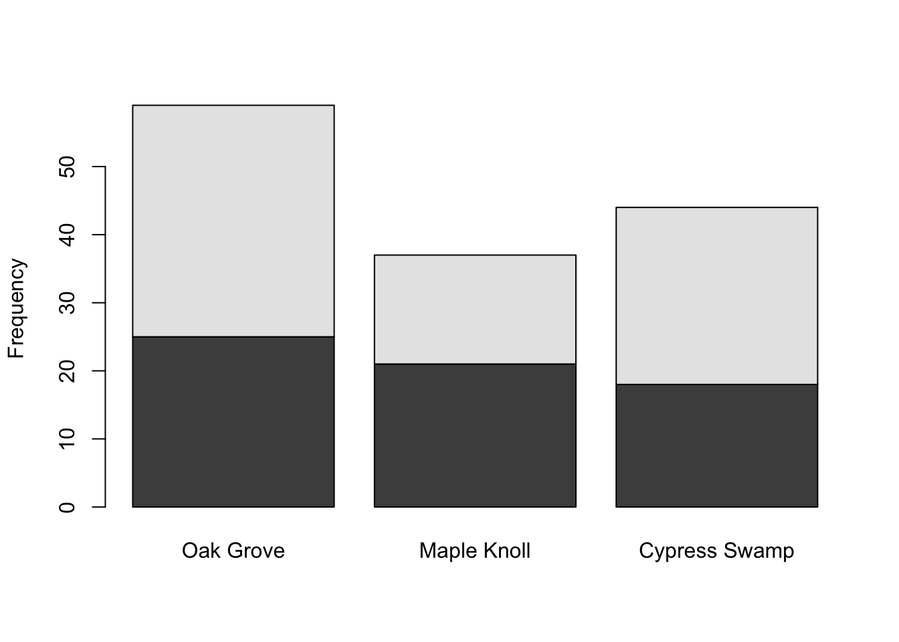
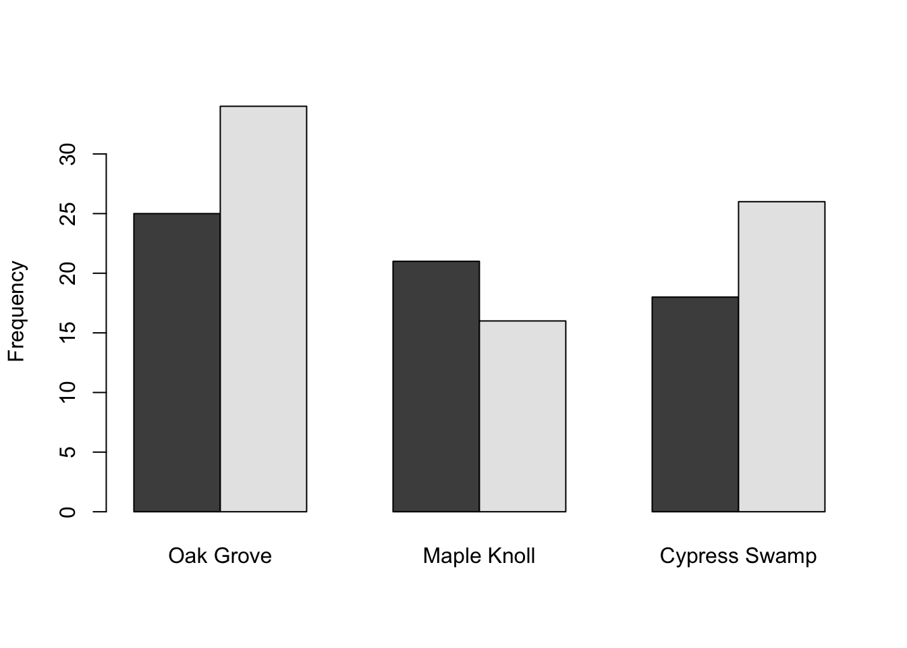
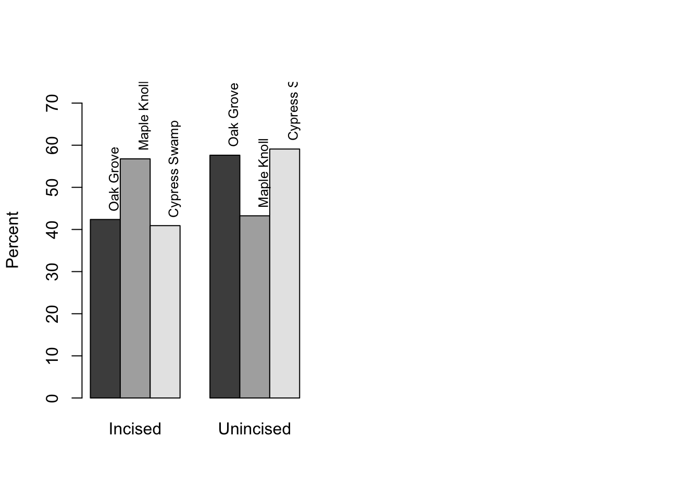
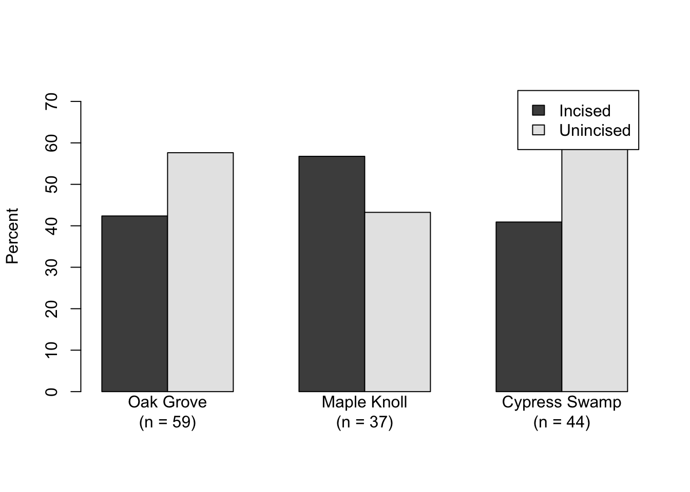

6 Categories (Ch. 6)
First download and import the data (remember that if your copy of ‘sherds.csv’ does not occupy the same relative location you will need to modify the filepath here to match the location of your local copy of sherds.csv).
Rather than look at the whole dataset - it doesn’t all fit in the console anyway - let’s use head() to examine just the first several rows (note that tail() is analogous).
## Site Style
## 1 Oak Grove Unincised
## 2 Maple Knoll Incised
## 3 Cypress Swamp Unincised
## 4 Cypress Swamp Incised
## 5 Cypress Swamp Incised
## 6 Cypress Swamp UnincisedHere we are dealing with a categorical variable rather than a numeric one (and this is a kind of data that both archaeologists and anthropologists very often have). In R, this means that the columns of data will be factors. We can check that by using str() to examine the data.
## Factor w/ 3 levels "Cypress Swamp",..: 3 2 1 1 1 1 1 3 3 2 ...## [1] "Cypress Swamp" "Maple Knoll" "Oak Grove"The 3 levels that str() references are the possible values of the factor - i.e., the categories. We can look at those levels directly - and you’ll notice that since R defaults to ordering factors alphabetically, our ordering doesn’t match Drennan’s. For our interests here this matters not at all, but it’s useful to understand how to reorder a factor.
sherds$Site <- factor(sherds$Site,
levels(sherds$Site)[c(3,2,1)])
#reorder by re-making sherds$Site as a factor, ordering the levels in the process. If you want to know what you’re reordering to, just run that piece of code to check:
## [1] "Cypress Swamp" "Maple Knoll" "Oak Grove"#since we're not assigning the result to an object, running this has no consequences beyond displaying the resultNote that the order of factor levels is basically arbitrary - but can effect, e.g., the order in which categories will appear in data plots, so it’s useful to be able to manipulate.
Note also that there is an importantly wrong way to do this, which we can diagnose as problematic by using the summary() function to count up all of the occurences of each value (i.e., how many sherds from each site). If you take the seemingly reasonable step of reordering the levels by simply overwriting them, you scramble your data values. Examing the alarming ‘before’ and ‘after’ outputs of summary() here, and keep in mind that if you want to re-order factors, this is not the way to do it!
## Oak Grove Maple Knoll Cypress Swamp
## 59 37 44## Cypress Swamp Maple Knoll Oak Grove
## 59 37 44The easiest way to restore your sherds object is to re-run the line above that reads in the object - and make sure that you don’t accidentally run the lines immediately above and re-scramble it.
sherds <- read.csv ("data/Drennan_datasets/sherds.csv", stringsAsFactors = T)
sherds$Site <- factor(sherds$Site,
levels(sherds$Site)[c(3,2,1)]) Now we can begin to explore the data, in various ways. The summary() function gives us an overview, and we can use table() to summarize just the counts of sherds from each site.
## Site Style
## Oak Grove :59 Incised :64
## Maple Knoll :37 Unincised:76
## Cypress Swamp:44##
## Oak Grove Maple Knoll Cypress Swamp
## 59 37 44To produce Table 6.2, we need to calculate and display frequencies and proportions. We’ll do that by building a table as above, and then using addmargins() to add a row sum. We can also use prop.table() to calculate relative proportions, but it won’t do the counting that table() does, so needs to operate on the output of table().
##
## Oak Grove Maple Knoll Cypress Swamp Sum
## 59 37 44 140#run prop.table converting proportions to %, adding a row sum, and rounding
round(addmargins(prop.table(SiteTable))*100, 2)##
## Oak Grove Maple Knoll Cypress Swamp Sum
## 42.14 26.43 31.43 100.00#combine the two tables
sherdsbysite <- rbind (addmargins(SiteTable),
round(addmargins(prop.table(SiteTable))*100, 2))
#add row names
rownames(sherdsbysite) <- c("Frequency", "Proportion")
sherdsbysite## Oak Grove Maple Knoll Cypress Swamp Sum
## Frequency 59.00 37.00 44.00 140
## Proportion 42.14 26.43 31.43 100It should be clear that you could produce Table 6.3 by doing the same but with sherds$Style.
Table 6.4 involves cross-tabulating the two variables - asking whether the frequencies and proportions of different ceramic styles vary at different sites. If you’ve used pivot tables in Microsoft Excel you may recognize this sort of summarizing by different variables - there’s considerable conceptual overlap.
##
## Incised Unincised
## Oak Grove 25 34
## Maple Knoll 21 16
## Cypress Swamp 18 26Using t() will transpose the table, producing something that matches the ‘Frequencies’ portion of Table 6.4.
##
## Oak Grove Maple Knoll Cypress Swamp
## Incised 25 21 18
## Unincised 34 16 26We can do the same thing more elegantly using the xtabs() function.
## Site
## Style Oak Grove Maple Knoll Cypress Swamp
## Incised 25 21 18
## Unincised 34 16 26## Style Site Freq
## 1 Incised Oak Grove 25
## 2 Unincised Oak Grove 34
## 3 Incised Maple Knoll 21
## 4 Unincised Maple Knoll 16
## 5 Incised Cypress Swamp 18
## 6 Unincised Cypress Swamp 26The Ftable object that we’ve just produced is a compact version of ‘sherds’; we didn’t need to produce this but you might well encounter data in this format that you’d then want to manipulate with xtabs(), like so:
## Site
## Style Oak Grove Maple Knoll Cypress Swamp
## Incised 25 21 18
## Unincised 34 16 26#various ways of plotting 'sherds' (first making a crosstab), using barplot
barplot(Xtable, ylab = "Frequency") # Stacked bar graph 
A stacked bar graph is, in this case, not very useful - unstacked bars allow better comparison.

Several more options that you should compare. What are the advantages/disadvantages to each? What information is each good at conveying; which comparisons does each facilitate?
barplot(base::t(Xtable), ylab = "Frequency", beside = T) # Side-by-side bar graph, rows/columns flippedbarplot(base::t(Xtable), beside = T, legend.text = T,
args.legend = list(x = "topleft")) #moves the legend# The next two use percentages to match Figure 6.1
barplot(base::t(prop.table(Xtable, 2)*100), ylim = c(0,75), ylab = "Percent", beside = T,
legend.text = T)We can also reproduce Fig. 6.1 by putting these in the same plot. The simplest way to do this uses base R graphics and divides the plotting space into multiple panes; each subsequent plot command then populates the next pane in the sequence. If we want to label the bars as Drennan does, we can then grab the values of the midpoints of the bars.
#set the mfrow parameter in par() to one rows and two columns
par(mfrow = c(1,2))
barplot(base::t(prop.table(Xtable, 2)*100),
ylim = c(0,75), ylab = "Percent", beside = T)
midpts <- as.vector(barplot(base::t(prop.table(Xtable, 2)*100),
ylim = c(0,75), ylab = "Percent", beside = T, plot = F))
#And the heights of the bars:
heights <- as.vector(base::t(prop.table(Xtable, 2)*100))
#...and then use those as coordinates for adding some text to the plot:
text(midpts, heights+2, labels = levels(sherds$Site), srt = 90, pos = 4, cex = .8) 
This may seem like more trouble than it’s worth, but it turns out often to be quite useful to be able to figure out exactly where elements of a plot are, and place text accordingly.
barplot(prop.table(Xtable, 2)*100, ylim = c(0,75), ylab = "Percent", beside = T)
midpts2 <- as.vector(barplot(prop.table(Xtable, 2)*100,
ylim = c(0,75), ylab = "Percent", beside = T, plot = F))
heights2 <- as.vector(prop.table(Xtable, 2)*100)
text(midpts2, heights2+2, labels = levels(sherds$Style), srt = 90, pos = 4, cex = .8)
As we’ve seen with boxplots, it’s easy to manipulate color as well.
barplot(base::t(prop.table(Xtable, 2)*100), ylim = c(0,75),
ylab = "Percent", beside = T, legend.text = T,
col = c("red", "green", "blue"), args.legend = list(x = "topleft"))
barplot(prop.table(Xtable, 2)*100, ylim = c(0,75),
ylab = "Percent", beside = T, legend.text = T,
col = c("red", "green", "blue"), args.legend = list(x = "topright"))
Bonus fun: it’s often a good idea to add sample size to your plots. You can do this in various places/ways. If you’re using barplot() and what to include it in the labels below each bar, the relevant argument is names.arg = (see ?barplot). You can do this by calculating the sample size and adding the text yourself, or you can add an object with the sample size to your labels, so that if the sample size changes your plot stays up-to-date (it’s a bit more hassle at first, but will save grief later).
#figure out the relevant sample sizes (total number of sherds/site)
#then make an object that pastes that together with some text
barnames <- paste(colnames(Xtable), "\n(n = ", colSums(Xtable), ")", sep = "")
#and use that object as an argument to names.arg
barplot(prop.table(Xtable, 2)*100, ylim = c(0,75), ylab = "Percent",
beside = T, legend.text = T, names.arg = barnames)
6.1 Practice
The data for the Ch.6 Practice are in AlAmadiyah.csv.